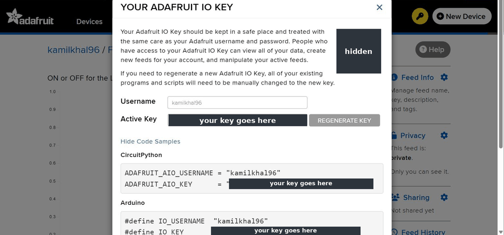
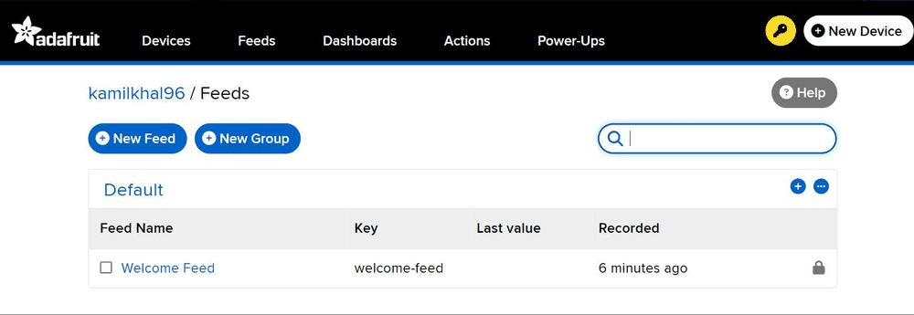
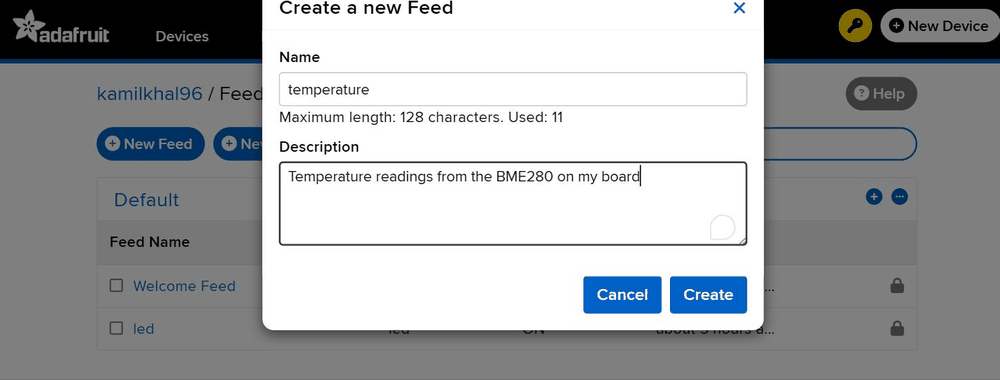
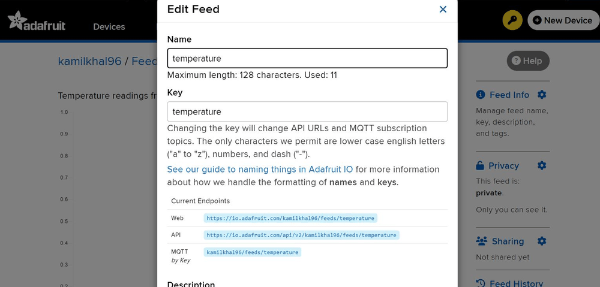
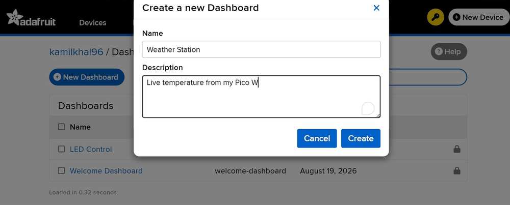
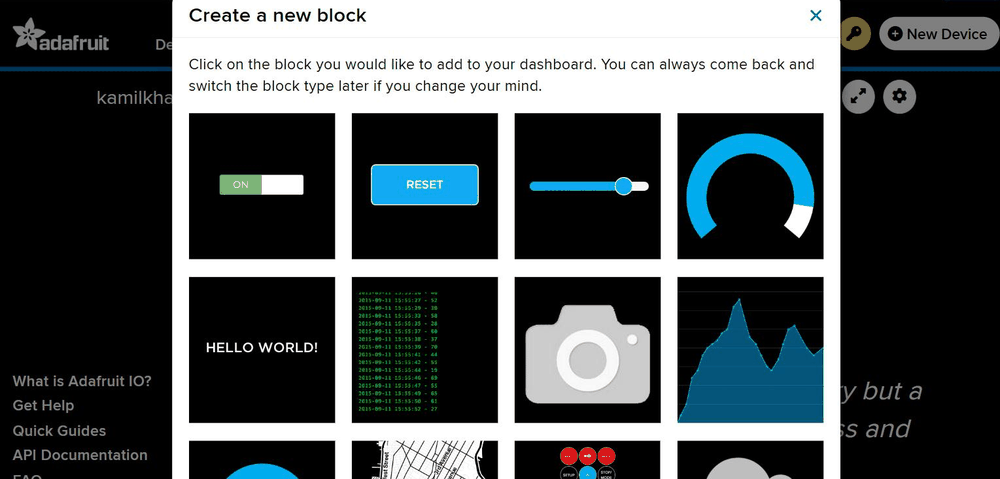
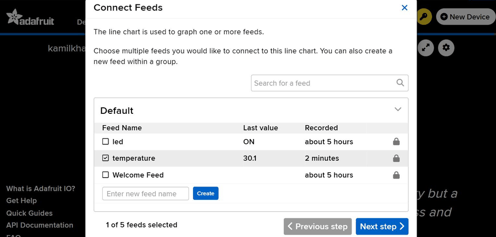
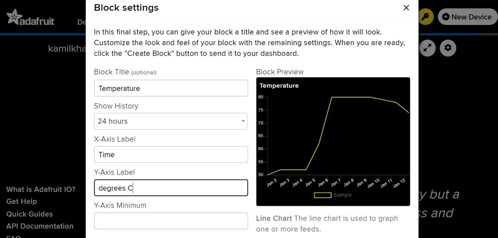
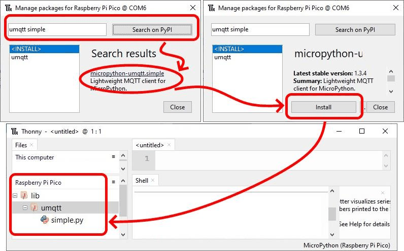
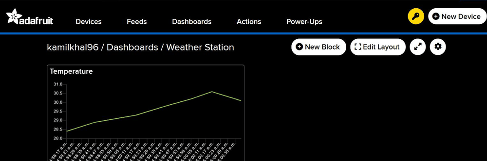

LilEx5 · Pico IoT Module · Activity 10
Every program you have written so far ended on your desk — a light, a line in the Shell, a number on a screen you were sitting in front of. Today the number leaves the room, and lands on a graph that someone on the other side of the world could be watching.
Make the board measure the weather in this room and send that measurement out over WiFi, so it draws itself as a live graph on the internet.
Nobody has to be near the board to see it. That is the entire point, and it is the thing that turns a gadget on a desk into what people mean when they say Internet of Things.
Three lines that do what your phone does when it hops onto the WiFi — and one of them waits.
Small devices do not talk to graphs. They hand their message to a server whose whole job is passing messages on.
A weather sensor joins GP0 and
GP1 alongside the screen and the tilt sensor. Still no new pins.
This one arrives with its unit stuck on the end. A graph cannot draw C, so the letter has to come off first.
print(), variables and comments, not, the
I²C bus, adding a library, and the habit of reshaping a reading before you use it. Today leans on
every one of them and re-teaches none.| 🧪 Wokwi | 🔌 The real LilEx5 | |
|---|---|---|
| What you need | A browser, and a free Adafruit IO account | The board, a USB cable, Thonny, a 2.4 GHz WiFi you know the password for, and a free Adafruit IO account |
| The circuit | Already wired in the starter project | Already wired inside the PCB |
| The libraries | Already in the project, as files | One copied from GitHub, one installed by name |
| The network | Wokwi-GUEST, no password | Your own network name and password |
| The program | The same, except for three lines — and the page shows you exactly which three | |
Wokwi-GUEST, is connected to the actual internet. A simulated board publishes to the
real Adafruit IO, and your real dashboard moves. It also means a wrong username or key
produces a real, genuine error — the simulator will not pretend for you.Today’s reading comes from a weather sensor — temperature, air pressure and humidity, all from one small part. It needs no new pins, because you built the road it travels on two activities ago.
0x78 while
MicroPython wants 0x3C. That is true of the screen and only the screen. This
sensor’s 0x76 is already the number MicroPython wants. In any case you never type it:
the library goes and finds the sensor for itself.The same one-line question as before. The bus does not mind who is asking:
Code is shown as a picture — turn on JavaScript to see it.A working setup answers with a list containing 118, which is
0x76 written as an ordinary number. On a real LilEx5 the list is much longer, because
every part on the board answers — look for 118 among them.
Ask the sensor for its values and it hands back three answers at once, and every one of them is words, not a number — the unit is stuck on the end.
Code is shown as a picture — turn on JavaScript to see it.Before anything can leave the room, the Pico has to get onto the WiFi — the same job your phone does silently every time you walk through a door.
It takes three instructions and then a wait. The wait is the interesting part.
You already know while from Activity 2, where it ran for ever. And you already know
not from Activity 6, where it turned an answer round. Today they work together for the
first time — and the result is a loop that stops on its own.
Read it out loud: while it is not connected, keep going round. The moment the joining
finishes, the answer changes, not turns it into a no, and the loop lets go. It is the first
loop in this whole module that ends by itself.
Being on the WiFi is not the same as having somewhere to send things. A small board does not talk to a graph directly. It hands its message to a server whose only job is passing messages on, and walks away.
That server is called a broker, and the way of talking to it is called MQTT. It was invented for exactly this: tiny devices, tiny messages, unreliable connections, and no idea who is listening.
The broker is handling messages from thousands of boards at once, so every message has to say which box it belongs in. That address is called a topic, and yours is built out of two things you already know: your username and the name of the box.
A message with nowhere to go is not much of a message. Before you write a line of code, make yourself a place on the internet for the numbers to arrive.
We use Adafruit IO — a free service built for exactly this, run by an electronics company, with no adverts and nothing to install.
Go to io.adafruit.com and sign up. It takes about two minutes and costs nothing.
Click My Key in the top bar. Two things are shown: your username and your active key. Write both down somewhere only you can see.

Feeds in the top bar, then + New Feed. Name it temperature, all in lower case — the name becomes part of the address, and the address is fussy about capitals.


Open the feed and click Feed Info. The MQTT address shown there is the line you will put in your program. Copy it exactly.

https:// in front of it. Copy that, and do not retype it.Dashboards → + New Dashboard, and name it anything.

Open it, click + New Block, and pick the line chart out of the gallery.

Tick your temperature feed to connect it — a block with no feed attached will sit there for ever showing nothing.

Give the block a title, decide how much history it should show, and create it.

You now have an empty graph waiting for its first point. Leave the tab open — watching it fill up is the best moment in this activity.
Two tools today are not built in: the one that talks to the weather sensor, and the one that talks to the broker. You have done this twice before — but one of them arrives by a route you have not used yet.
| Library | What it is for | How it gets onto the Pico |
|---|---|---|
bme280.py | Reading the weather sensor | Copied from GitHub — the Activity 7 and 8 routine, third time |
umqtt.simple | Talking to the broker | New: installed by name, by Thonny itself |
Both are already there. Open the starter project and look along the tab bar:
bme280.py, ssd1306.py and umqtt_simple.py are all sitting in it
as project files, and Wokwi copies every project file onto the simulated Pico each time you press
play. There is nothing for you to add.
umqtt_simple.py — an underscore where the real board has a dot. It is the same
tool. This is one of the three lines that differ between the two routes, and the code section points
it out again.Open bme280.py
in the STEM Lab library, press Raw, select all of it and copy. In Thonny make a new
file, paste, and File → Save as… → Raspberry Pi Pico, named exactly
bme280.py.
This is the one place where pasting is allowed and always has been: a library is somebody else’s tool and nobody retypes one. Your own program is still yours to type.
This one is published properly, under a name, so Thonny can fetch it for you:
Tools → Manage packages…, type
micropython-umqtt.simple, press search, then Install.
Thonny puts it on the Pico inside a folder called lib. You will never open it, and
that is rather the point — this is what installing a library normally looks like.

lib/umqtt/. If the file browser does not show it there, the install did not finish.ImportError: no module named 'bme280' or
ImportError: no module named 'umqtt' both mean the same thing they meant in Activity 7:
Python looked on the Pico’s disk and did not find it. Not your laptop’s disk. Two
different disks, as ever.Three things decide whether a message arrives and draws itself: the reading has to have its unit taken off, the address has to be built correctly, and you have to stay inside the limit. Play with all three here, where nothing can go wrong, before you write the program that does it for real.
There is nothing to wire today — on either route. It is worth looking at anyway, because the picture is the payoff for Activity 7.
Open the starter project. Everything below is already in it: a Pico
W, the weather sensor and the screen both wired to GP0 and
GP1, and the three library files. main.py is deliberately empty
— that part is yours.
🧪 Open the Activity 10 starter project
| Physical pin | Name on the board | Sensor pad |
|---|---|---|
| 1 | GP0 | SDA — the data |
| 2 | GP1 | SCL — the clock |
| 3 | GND | GND |
| 36 | 3V3 | VCC — power in |
Nothing to wire at all. The weather sensor is soldered onto the LilEx5 already, on the same two wires as the screen and the tilt sensor. Switch the board on at SW5, plug in the USB cable, and that is the whole circuit.
| Part | Where it is | Address |
|---|---|---|
| Weather sensor (T, RH, P) | GP0 and GP1, marked U4 on the board | 0x76 |
| Screen | the same two pins | 0x3C |
| Tilt sensor | the same two pins | 0x68 |
It is the longest program in this module so far, and most of it you have written before. Read it once from top to bottom before you type anything: five details to fill in, then the bus, then the network, then the broker, then a loop that does one small thing over and over.
Code is shown as a picture — turn on JavaScript to see it.The five lines that are new. The box turns green when a line is exactly right.
Five boxes, five lines. Line 1 has capitals in two places and they both matter. Line 3 ends in a colon.
| Code | What it means |
|---|---|
| Code is shown as a picture. | The sensor’s library. Same job as the screen’s and the tilt sensor’s, and it fails in the same way if the file is not on the Pico. |
| Code is shown as a picture. | Making the sensor. Tell it which bus to look on and it finds itself. From
here bme is its name, the way oled was the screen’s. |
| Code is shown as a picture. | Picking up the radio. The capitals matter. The part in brackets means join somebody else’s network, as opposed to making one of your own — which the Pico can also do, and we are not doing. |
| Code is shown as a picture. | Switch the radio on. Nothing works before this and the error you get if you forget is not a helpful one. |
| Code is shown as a picture. | Ask to join, giving the name and the password. This only starts the joining — it does not wait for it. |
| Code is shown as a picture. | The waiting. While it is not yet connected, go round again. The first loop in this module that stops by itself. |
| Code is shown as a picture. | The Pico’s own address on the network, now that it has one. Printing it is how you prove the joining worked rather than hoping. |
| Code is shown as a picture. | Describing the middleman. A name for your board, the broker’s address, and the two things that prove the account is yours. Nothing happens yet — this line only writes down the details. |
| Code is shown as a picture. | Now it happens. The board knocks on the broker’s door and stays connected. A wrong key stops the program here, loudly. |
| Code is shown as a picture. | The first of the three answers — the temperature, as words, with its unit still on the end. |
| Code is shown as a picture. | The new one. All of it except the last character. The minus one means the last, counted from the end; the two dots mean a run of them. |
| Code is shown as a picture. | Off it goes. The address, then the message. One line, and it leaves the building. |
| Code is shown as a picture. | Five seconds. Not because the sensor is slow — because a free account accepts thirty messages a minute and this keeps you well under. |
The broker keeps one connection per name. If two boards claim the same name, the broker assumes the second one is the first one reconnecting and hangs up on the first. On your own account with one board it makes no difference — but if a whole class shares one account, everybody needs a different name or you will knock each other off all lesson.
They arrive at the same instant, in the same answer, and they are the second and the third of the three. Each carries a different unit on its end, and the units are not all one character long — which is the first thing to think about if you go after them in the exercise.
| Save | Run | Where to look | |
|---|---|---|---|
| Wokwi | Ctrl+S | The green ▶ Play button | The black console underneath, and your dashboard in another tab |
| Real board | Ctrl+S, choose Raspberry Pi Pico, name it weather.py | The green ▶ Run arrow, or F5 | Thonny’s Shell, and your dashboard in a browser |

Work down this table in order. Almost everything today goes wrong in one of two places: getting onto the network, or proving who you are to the broker.
| What you see | What it means | Try this |
|---|---|---|
| It sits there for ever and never says it joined | The joining never finished | Check the network name and the password character by character, capitals included. On a real board, check it is a 2.4 GHz network and that it does not want you to sign in on a web page. |
MQTTException: 5 | The broker refused you | Your username or your key is wrong. Copy the key again from My Key — it is long and it is easy to miss a character off the end. |
OSError: [Errno 103] ECONNABORTED | Same thing, said differently | Username or key again. On the real board it can also mean the network let you on but has no route to the internet. |
OSError: -2 or a name-lookup error | The broker’s address could not be found | Check the spelling of the broker’s address. If it is right, you are on a network that is not actually reaching the internet. |
ImportError: no module named 'bme280' | The sensor library is not on the Pico | Same problem, same fix, same place as Activity 7 — the library section. Check the name ends in .py. |
ImportError: no module named 'umqtt' | The broker library is not on the Pico | The install did not finish. Tools → Manage packages again, with the board connected and nothing running. |
ImportError: no module named 'umqtt_simple' | You are on the real board, using the Wokwi spelling | Underscore is Wokwi, dot is the real board. One of the three lines that differ. |
| The Shell is fine but the graph stays empty | The messages are going to the wrong address | Compare the address in your program with the one on the feed’s Feed Info page, letter for letter. Lower case, and your own username. |
| The graph has points but they are all flat at zero | The unit went out with the number | The stripping line is missing or is not being used. The graph got words where it wanted a number and gave up. |
| It worked, then stopped after a while | You went over the limit | Thirty messages a minute on a free account. Check the wait is five seconds and that it is inside the loop. |
| The graph is a perfectly flat line and nothing is wrong | Nothing is changing the sensor | In Wokwi you have to click the sensor part while it is running to get its sliders. On the real board, cup your hands round it. |
MQTTException: 7 or it keeps reconnecting | Two boards are using the same name | Give each board its own name for itself. Only bites when a class shares one account. |
| It works in Wokwi but not on the board | Two different disks, and two different networks | The library files are in the Wokwi project, not on your real Pico — and Wokwi-GUEST does not exist in this room. |
| The whole board went dead | You knocked SW5. Still the power switch. |
Your number is on the internet, and to see it you have to open a browser. That is fine until the moment somebody standing next to the board asks what it says.
Task: put the temperature on the board’s own screen at the same time as it goes to the graph. The screen shows the word Temp on the top row and the reading on the row below it, updating every time a message is sent. The graph keeps working exactly as it does now.
This is what is already in front of you, on both routes. Not a single wire moves for this exercise — the screen has been on these four pins since Activity 7 and the weather sensor joined them last page.
Do not start a new file. Start from the program you have just written, which already reads the sensor and already publishes, and give it one more thing to do with the reading it already has.
The screen needs two things above the loop, both of them lines you wrote in Activity 7 and have not needed since: its library brought in at the top, and the screen itself made just after the bus. The bus line does not change — the screen is on the bus you have already set up.
Nothing else above the loop changes at all.
Six things now, in this order, every time round:
Putting a label on one row and a value on the row below it is exactly what Activity 8’s main program did: write the label at 0, write the value at 16. That has not changed.
Six things to check before you decide it is broken:
Test it by warming the sensor and watching both at once. If the screen changes and the graph does not, the publishing is what broke, not the screen.
Finished early? Try these — no answers given.
Five questions. No marks, no pressure — just check it stuck.
| WiFi | How the Pico talks to a router without a wire. A Pico W only joins 2.4 GHz networks. |
| Network name | What the network calls itself — the name you pick from the list on your phone. |
| Address | The number a network gives your board so messages can find their way back to it. |
| MQTT | A way for small devices to send short messages to a server. Built for exactly this. |
| Broker | The server in the middle. It takes messages in and hands them on to whoever asked for them. |
| Publish | Send one message to one address. The board does it and forgets it. |
| Feed | A named box on the website that holds one stream of numbers. |
| Topic | The address of that box, built from your username and the box’s name. |
| Key | The long secret that proves an account is yours. It is a password. Treat it like one. |
| Dashboard | A page of blocks — graphs, gauges, switches — showing what is in your feeds. |
| Rate limit | The most messages a minute an account is allowed. Thirty, on a free one. |
| Captive portal | A network that makes you agree to something on a web page first. A Pico cannot get past one. |